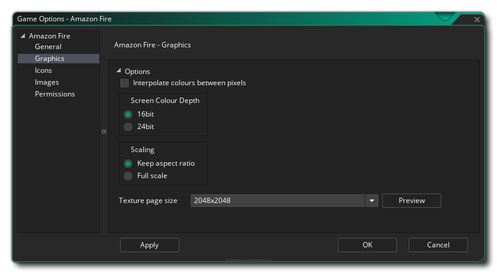
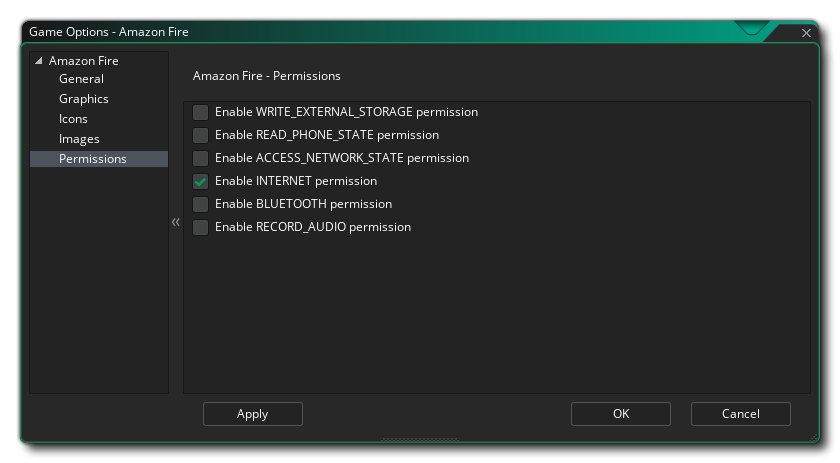

This section outlines the different options available to you that control how your Amazon Fire game projects will be compiled. The different sections are:

The first part of the General section is dedicated to the Product Information and the Build Settings. You should fill in the Product information, which includes the projects Display Name, its Package information, which consists of a Domain, Company and Product. The package information can only be made up of letters from A-Z and numbers 0-9, with no symbols or other special characters at all, nor should it have uppercase characters. These details will then be used to generate a Package ID with the format "com.company.myappname".
NOTE: If you have already set up the Android target Game Options, you can click the "Sync from Android" button at the top to transfer the relevant information from the Android target to the Amazon Fire.
You then need to set the Build Tools and Support Library versions, as well as the Target, Minimum and Compile SDK versions. The Build Tools and Support Library are used when GameMaker Studio 2 builds your game for the Android target and should be set to appropriate values based on the tools you have installed using the Android SDK Manager or Android Studio.The Target SDK indicates that you have tested your app on (up to and including) the version you specify here. This is simply to give the Android OS an idea of how it should handle your app in terms of OS features. For all practical purposes, most apps are going to want to set Target SDK to the latest released version of the API (as used by the Compile SDK setting). This will ensure your app looks as good as possible on the most recent Android devices.
The Minimum SDK version is the minimum API level that will run your project. From August 2018 Google has made API level 26 the required minimum, but if you add extensions then they may require a higher minimum API level.
The Compile SDK version is the version of the API that the project is compiled against. This means you can use Android API features included in that version of the API. If you try and use API 16 features - for example - but set Compile SDK 15, then you will get a compilation error. However, if you set the Compile SDK to 28 then you can still run the app on an API 23 device (as well as all other previous versions too).
You can select from one of the predefined target settings by clicking on the Pre-populate SDK values to chosen API level button, which will open a list of different APIs to choose from. Selecting any one of them will populate all the SDK files with appropriate values which you can then use or edit as required.
NOTE: You must have installed the appropriate APIs in the Android SDK Manager or through Android Studio for your projects to compile correctly.

The second part of the General section covers the different Orientations that your game can be run on for the best user experience. The available options are:
- Landscape
- Portrait
- Landscape-flipped
- Portrait-flipped
Finally you have the following miscellaneous options:
- Enable Bluetooth/iCade support: This will add support for bluetooth or iCade gamepads to your game project. This is on by default.
- Enable MOGA gamepad support: This will enable support for MOGA controllers. Note that all MOGA functionality is accessed via an extension, and when you first check this option you will be prompted to download and install the MOGA extension from the Marketplace. This option is off by default.
- Run Lint Code Analysis: When this option is flagged, the build tools will run a lint code analysis on the project as it builds, giving a more in-depth error check and showing more information in the output window as the project compiles (a LOG file will be created too, with the path to the file shown at the end of compiling in the Output Window). Note that not everything flagged by lint analysis as an error is necessarily problematic for your game, and having this enabled may mean that your game no longer compiles, even though when it is off, it will compile and run fine. Essentially this is only for debugging, and the option is off by default.
- Install Location: Here you can set the default Install Location for your game. This can either be set to Automatic, in which case the game will be installed to the location chosen by the user on their device, or it can be set to Prefer External which will always try to install the game to the external storage of the device.
You can also set the Amazon Fire Sleep Margin here. This option is related to reducing stuttering when running your game on specific systems. Basically, if your game is running faster than your room speed GameMaker Studio 2 will "sleep" for the remaining time, but this sleep can be quite inaccurate and you can often end of sleeping for longer than necessary, causing your frame to take longer which causes stuttering. To get around this we can sleep for less time, then sit in a tight loop for the remainder of the time to make it more accurate - although the problem with sitting in a loop is that it causes CPU usage to increase, which in turn can cause your CPU temperatures to rise and your device to use more battery. By default, this value is set to 4, and in 99.99% of the cases you'll be fine with this, but for low end devices or for devices with a lot of background processes running this may not be an ideal solution and a value of 5 up to 10 may be required. Note though that this is very much a device specific configuration and what works on your build device may not be appropriate for another user, and as such if in doubt leave it set to 4.

Here you can change the following details related to how your game will be displayed, with the following options are available:
- Interpolate colours between pixels: Turns on interpolation, which basically "smooths" pixels. for crisp pixel graphics, it should be off, but if you have nice alpha blends and smoothed edge graphics it is better left on. Default is off.
- Screen Colour Depth: This can be used to set the colour depth for rendering to either 16bit or 24bit. This will affect the compatibility with some older devices if it is set to 24bit, and will also increase the ashmem that is needed (this is the shared memory on AmazonFire devices).
- Scaling: Here you can select to scale the draw canvas maintaining the aspect ratio within the device screen - adding "padding" around the edges to fit the screen - or you can select to have the draw canvas stretched stretch to fit.
Finally there is the option to set the size of the Texture Page. The default (and most compatible) size is 2048x2048, but you can choose from anywhere between 256x256 up to 4096x4096. There is also a button marked Preview which will generate the texture pages for this platform and then open a window so that you can see how they look. This can be very useful if you wish to see how the texture pages are structured and to prevent having texture pages larger (or smaller) than necessary.
NOTE: Be aware that the larger the size of the texture page, the less compatible your game will be.

This section permits you to add the various icon images that your project will need for the different store pages and devices. All icon images should be created as 24bit PNG files of the appropriate sizes given.
It is worth noting that GameMaker Studio 2 has a Project Image Generator tool which can be used to automatically create all the icons required for all the different target platforms your game is being compiled to. If you use this tool, you should revise the images created to ensure that they are what you require.

Here you can add a splash screen to your final game file, for both landscape and portrait modes, which will be shown while the game loads on the device. This screen should be a 24bit PNG file, and is recommended to be the same size as the first room (or view) of your game. If you require that the splash screen be shown for a specific time then you can also set it here from 0 to 10 seconds (the default time of 0 means that it will only show for the duration of the asset loading).
It is worth noting that GameMaker Studio 2 has a Project Image Generator tool which can be used to automatically create all the images required for all the different target platforms your game is being compiled to. If you use this tool, you should revise the images created to ensure that they are what you require.

From this tab you can change some of the permissions that your game may request within the Amazon Fire Manifest. GameMaker Studio 2 will allocate permissions automatically as required, however you may find you require a permission for your game that hasn't been correctly assigned (for example, when you use custom extensions) in which case tick the requisite permission box. The list below outlines those that are available:
- WRITE_EXTERNAL_STORAGE: Will permit your game to write to external storage.
- READ_PHONE_STATE: Allow read only access to the phone state.
- ACCESS_NETWORK_STATE: Permit your game to access information about networks.
- INTERNET: Permit your game to open network sockets.
- BLUETOOTH: Will permit your game to connect to paired Bluetooth devices.
- RECORD AUDIO: Will permit your game to record audio input from the microphone.
NOTE: If you are not sure that you need these, you should probably just leave them un-checked by default and let GameMaker Studio 2 deal with the permissions for your game.